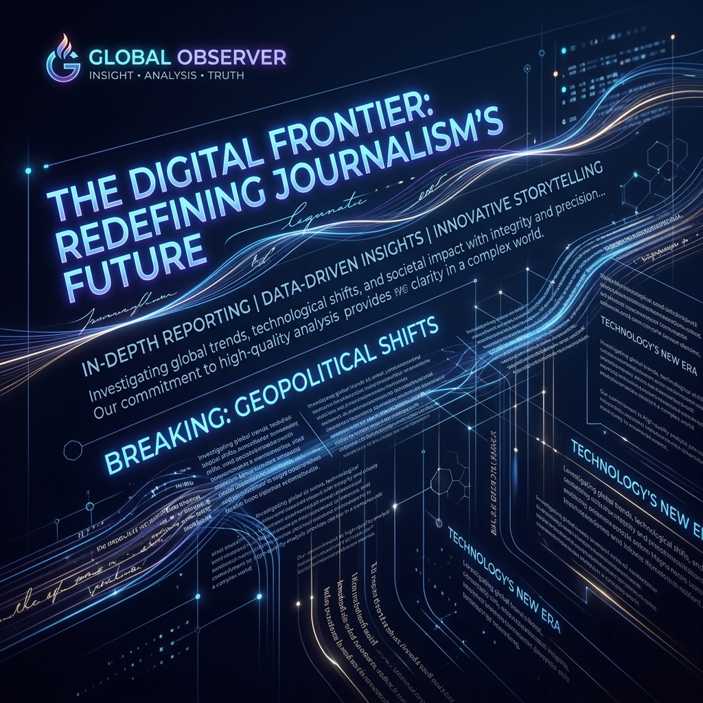

Redes Sociales
Campaña de Engagement
Creación de contenido audiovisual, diseño e implementación para potenciar la presencia de marca.
Ver en InstagramHola, soy Sebastian Serrano. Periodista con mención en Comunicación Estratégica especializado en contenido digital, social media y branding.
Especialista en redacción, creación de contenido digital y campañas publicitarias.
Periodista con mención en Comunicación Estratégica de la Universidad Finis Terrae, con experiencia en gestión de redes sociales y comunicación interna.
Especializado en creación de contenido y ejecución de estrategias digitales orientadas a aumentar engagement, posicionamiento de marca y conexión con audiencias. Perfil adaptable, con foco en resultados y en la construcción de mensajes claros y efectivos trabajando en equipo.
Creación de contenido orientado a aumentar engagement y conexión con la audiencia.
Ejecución de estrategias digitales focalizadas en posicionamiento de marca y audiencias.
Gestión de redes, comunicación interna y crisis con mensajes claros y efectivos.
Universidad Finis Terrae
Certificación en narrativas para construcción de marca.
Dominio en estrategias de marketing automatizado y optimización.
Creación de contenido audiovisual, diseño e implementación para potenciar la presencia de marca.
Ver en InstagramEstrategia en formato carrusel y copy persuasivo orientado a la conversión de usuarios.
Ver en InstagramDirección, edición y storytelling en formato vertical para enganchar rápidamente a la audiencia.
Ver en InstagramDesarrollo de mensaje claro y directo para reforzar la identidad del cliente.
Ver en InstagramContenido dinámico en TikTok aprovechando tendencias para aumentar alcance orgánico.
Ver en TikTokEdición de alto impacto y comunicación ágil adaptada al ecosistema y algoritmo de TikTok.
Ver en TikTok
Nota deportiva de alto rigor periodístico sobre Maddalena Sagen para Panam Sports.
Leer artículoNarrativa y resumen de la emocionante victoria de Brasil sobre Argentina en el panamericano.
Leer artículoSpot comercial diseñado para captar atención y generar acción en el cliente potencial.
Reproducir VideoEjecución visual de campaña publicitaria con enfoque en narrativa e identidad de marca.
Reproducir VideoPieza audiovisual enfocada en la transmisión de valores de manera dinámica e inmersiva.
Reproducir VideoDocumento oficial de validación de título profesional universitario.
Ver DocumentoFlujos y estrategias de automatización para campañas de email con alto engagement.
Ver ProyectoDocumentación y aplicación de narrativas para la construcción estratégica de marca.
Ver Proyecto